Breast Cancer Diagnosis via Logistic Regression
Fine Needle Aspirate (FNA) Cytological Analysis & Explainable AI Pipeline
Student: Rumman Islam
Course: Data Science
Repository: github.com/rumman-islam/data-science
Methodology: 8-D EDA, VIF Multicollinearity Reduction, Logistic Regression & Unsupervised K-Means
Early detection is critical in reducing breast cancer mortality. This project delivers an automated clinical decision support system that classifies tumors as Malignant (M) or Benign (B) with 0.9887 AUC-ROC, ensuring fully explainable biological weights.
Dataset Characteristics & Class Balance
Wisconsin Diagnostic Dataset (WDBC) — 31 Attributes, 0 Missing Values
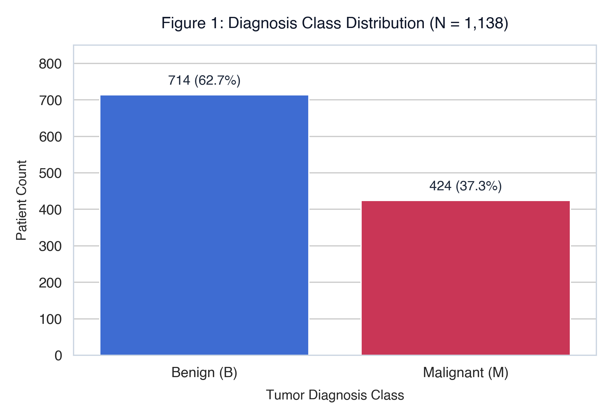
Zoom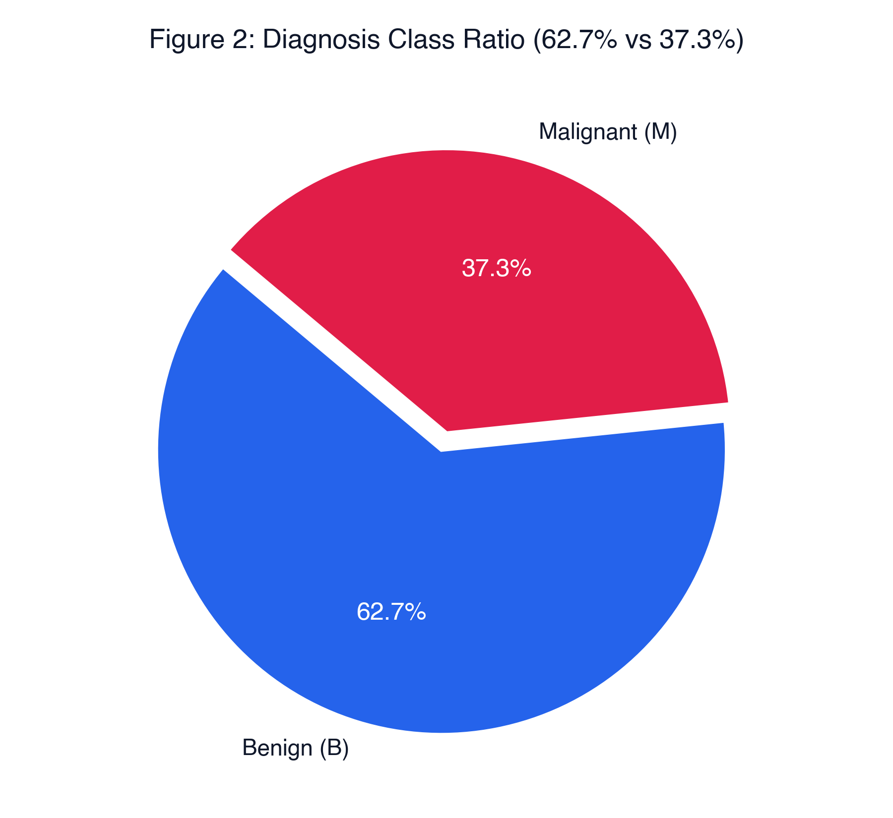
ZoomTumor Morphology & Outlier Variance
Distribution shift and extreme geometric dispersion in malignant nuclei
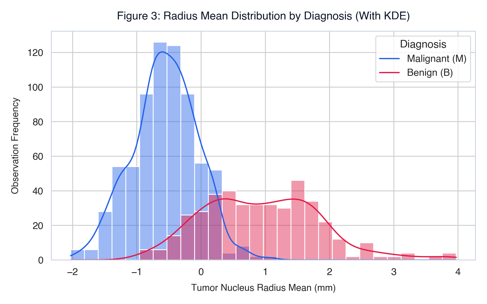
Zoom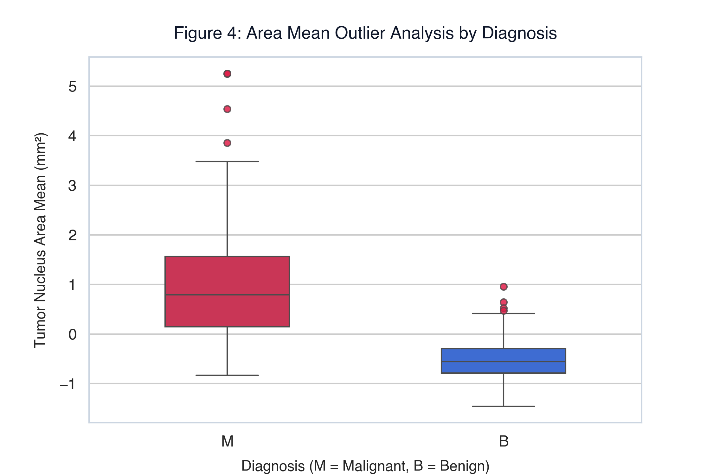
ZoomMulticollinearity Mitigation & Feature Selection
Eliminating mathematical redundancy (r > 0.98) to stabilize regression weights
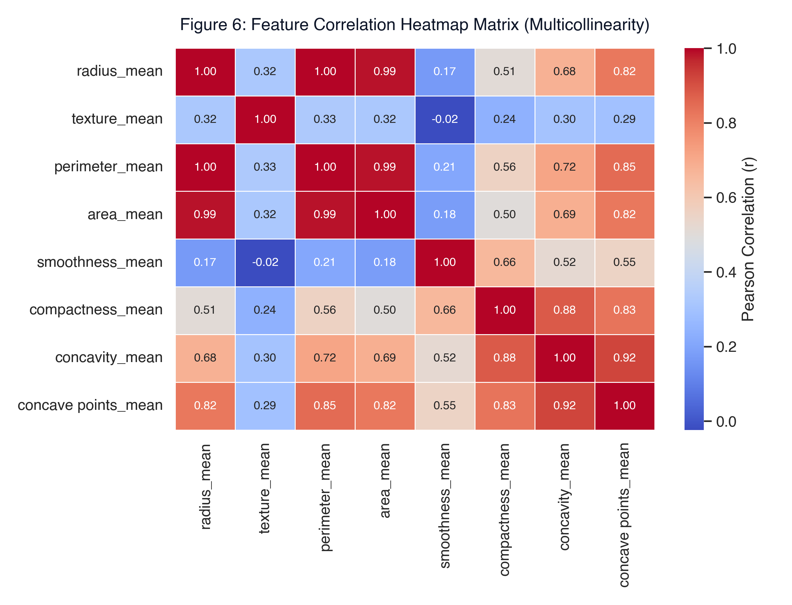
Zoom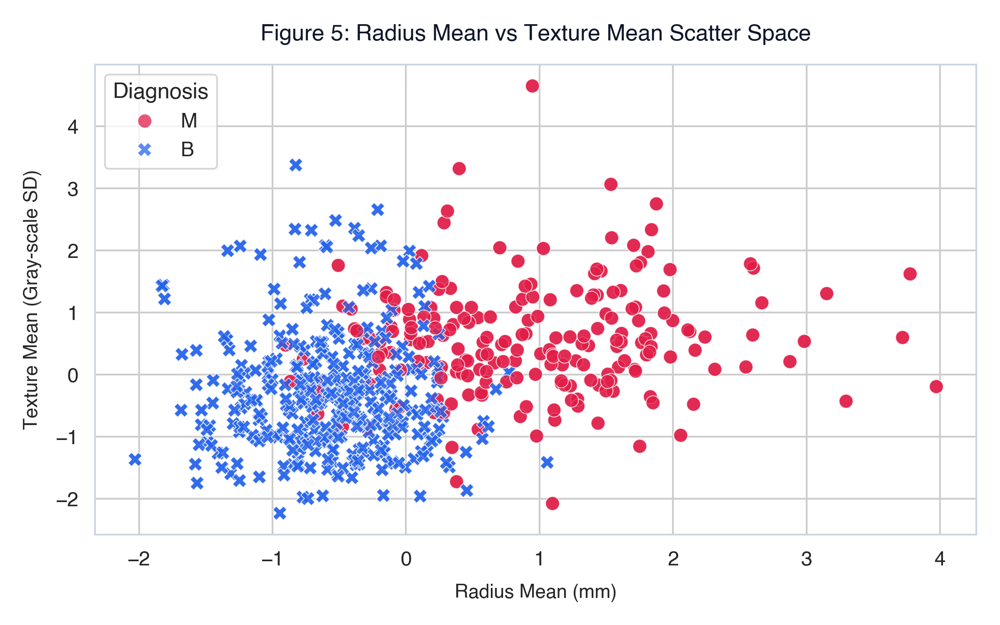
ZoomConfusion Matrix & Key Feature Drivers
Logistic Regression test set evaluation (N = 228) and standardized coefficients
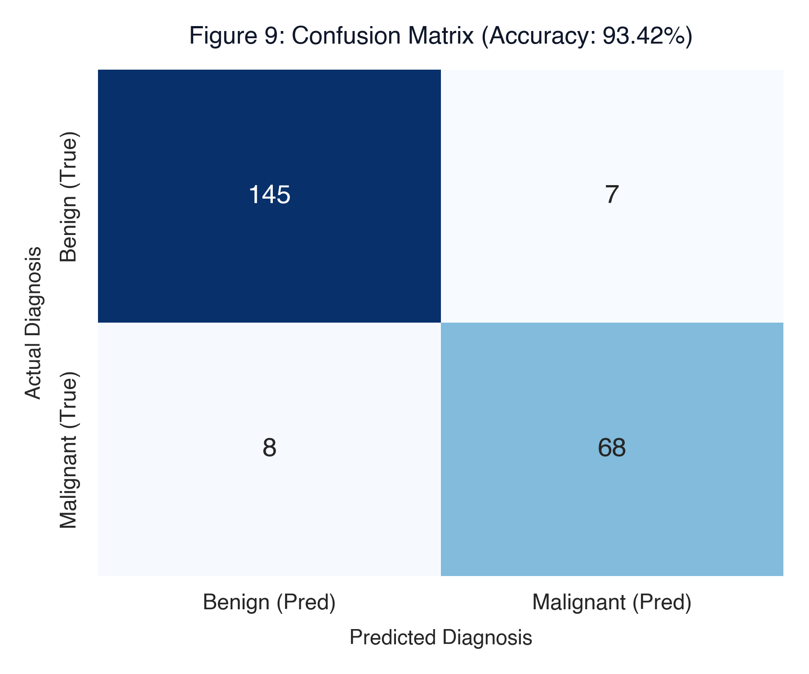
Zoom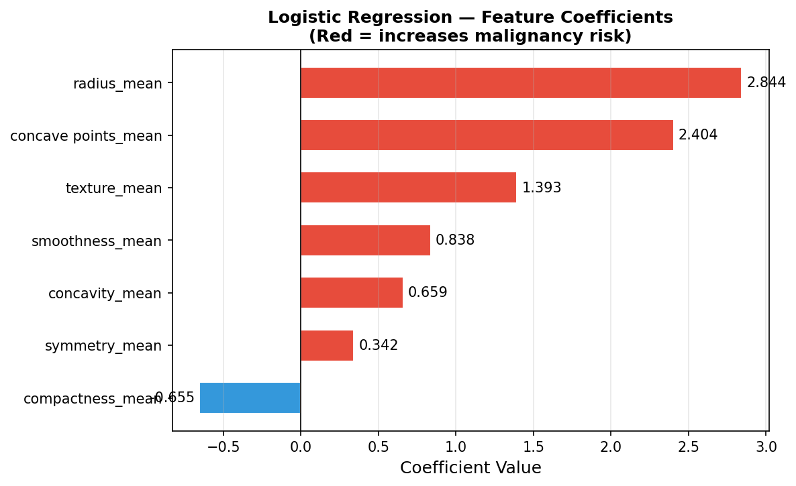
ZoomROC Curve & Diagnostic Discriminability
Near-perfect discriminatory capability across all risk thresholds
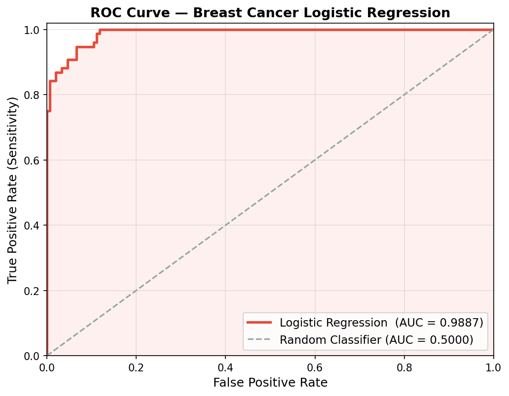
ZoomUnsupervised Clustering & Core Takeaways
K-Means (K=2) and 2D PCA confirm inherent biological bimodality
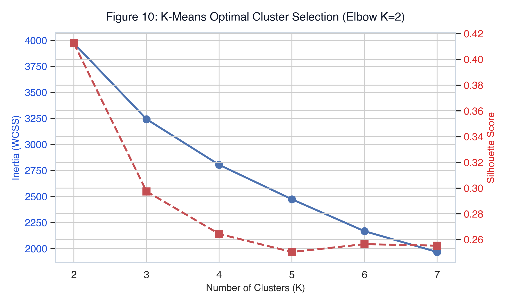
Zoom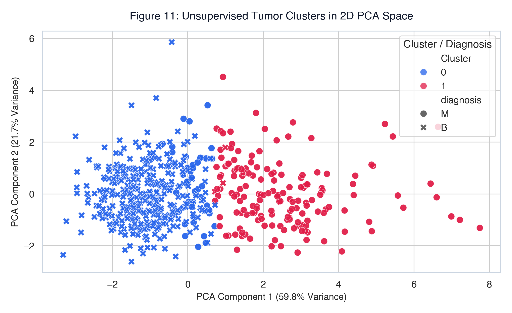
Zoom